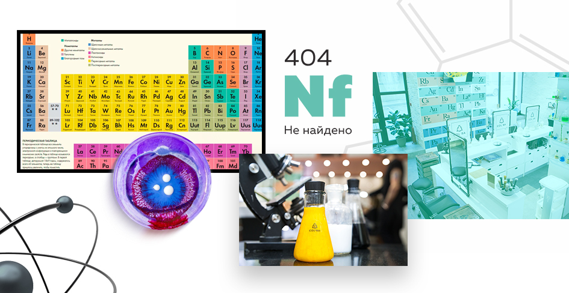
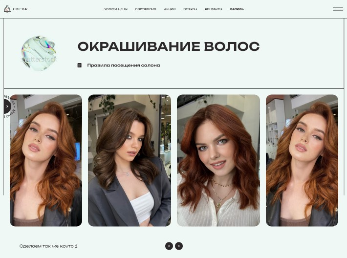
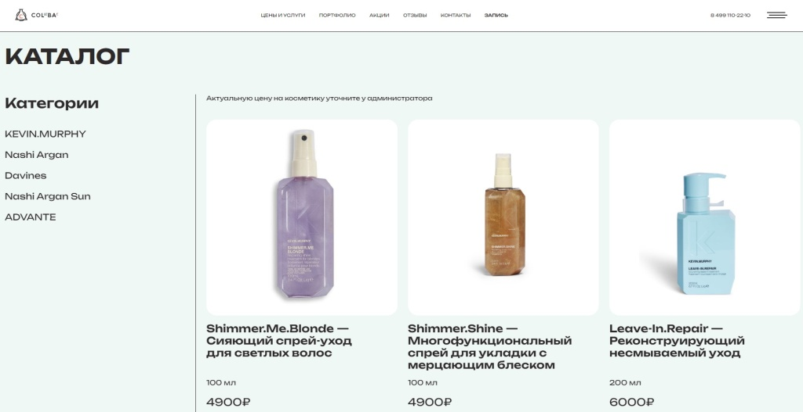
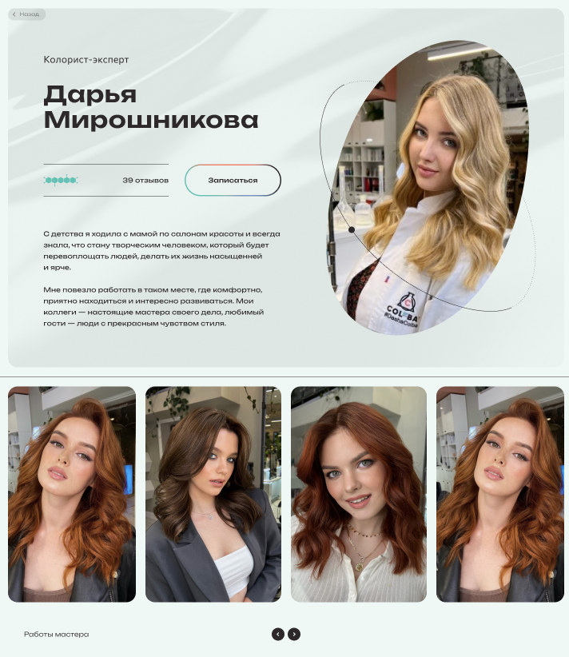

Создание дизайна
Лаборатории красоты Colba требовалось создание модного, масштабируемого интернет-ресурса с адаптивным, приятным дизайном, который должен красиво смотреться на мобильных устройствах и на ПК. Основное внимание уделялось дизайну сайта, который должен перекликаться с химозным интерьером и брендбуком заведения. Четкой картины у заказчика не было, но хотелось уйти от стандартного представления салонов с фотографиями процедур.
Поддержание фирменного стиля
Салон Colba Color Bar стилизован под лабораторию — краски смешивают в пробирках и колбах, мастера работают в белых халатах, а стены увешаны таблицой Менделеева и портретами знаменитых химиков. В разработке дизайна сайта мы придерживались выбранной концепции, которая диктует нам принципы простоты, цвета и внимания к деталям. В работе мы старались уйти от очевидных символов химии. Важно было сделать сайт места где создают красоту, поэтому все элементы дизайна только намекают на химическую лабораторию.

Портфолио
Органично вписали фото работ мастеров, которые регулярно обновляем.

Каталог косметики
Продукты можно отфильтровать по бренду и найти нужный.

Команда
У каждого сотрудника есть страница на сайте, которая содержит информацию о нём, фото и видео работ, а также отзывы, которые подтягиваются с Yclients по API. Также можно сразу записаться на приём, выбрать удобный день и время.

Результат
Самая главная цифра — среднее время пользования сайтом увеличилось в 3,5 раза. Сайт получился ярким, запоминающимся. Клиенту и его клиентам сайт нравится, результат превзошел ожидания! В данный момент занимаемся запуском рекламы на сайте, а также SEO-продвижением.